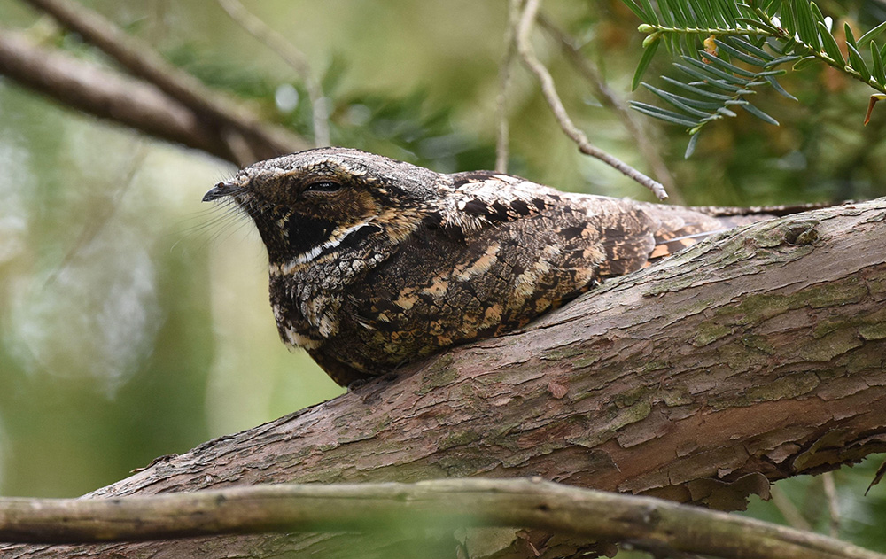
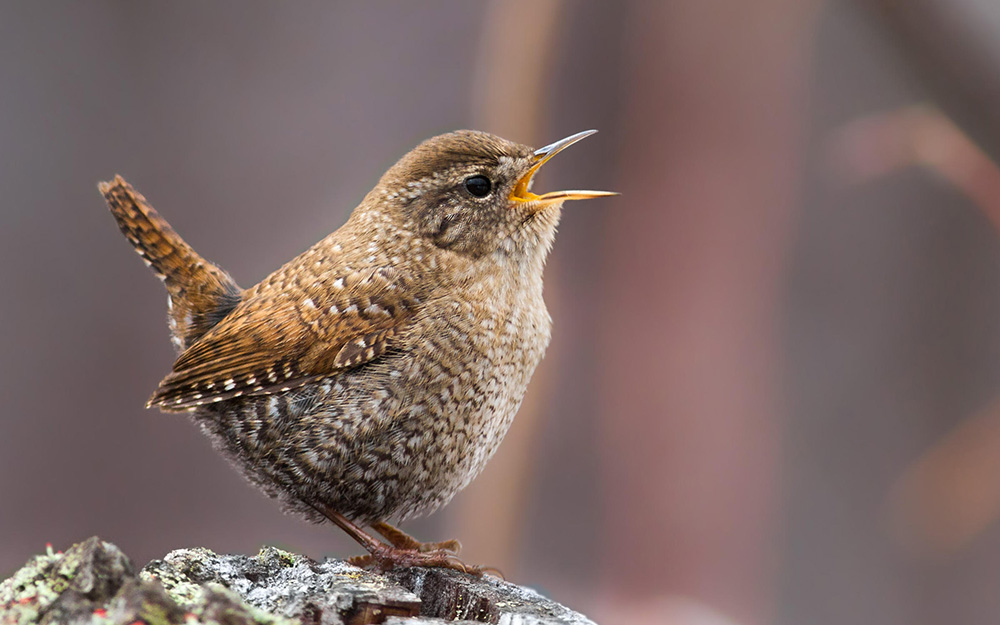
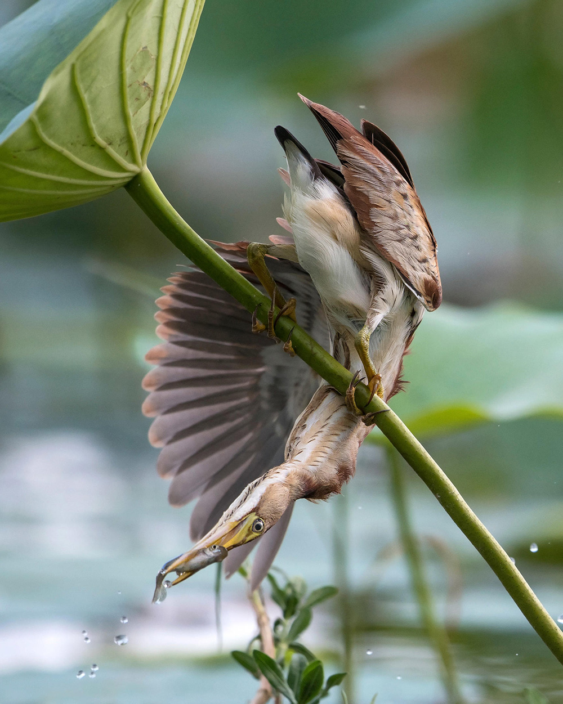

How many times can the Eastern Whip-poor-will repeat its call in one night?

In what season does the Winter Wren live close to the ground?

How common IS the Common Loon?
True or False- The Least Bittern is a type of Heron.

All finished!
Congrats, by completing this quiz you are now a certified bird (almost) expert! Don't put those binoculars away yet though– you still have a long way to go.